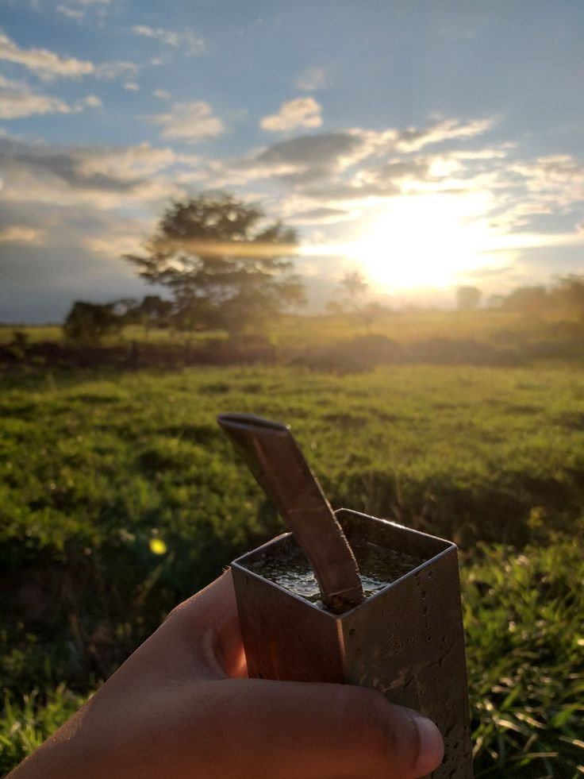
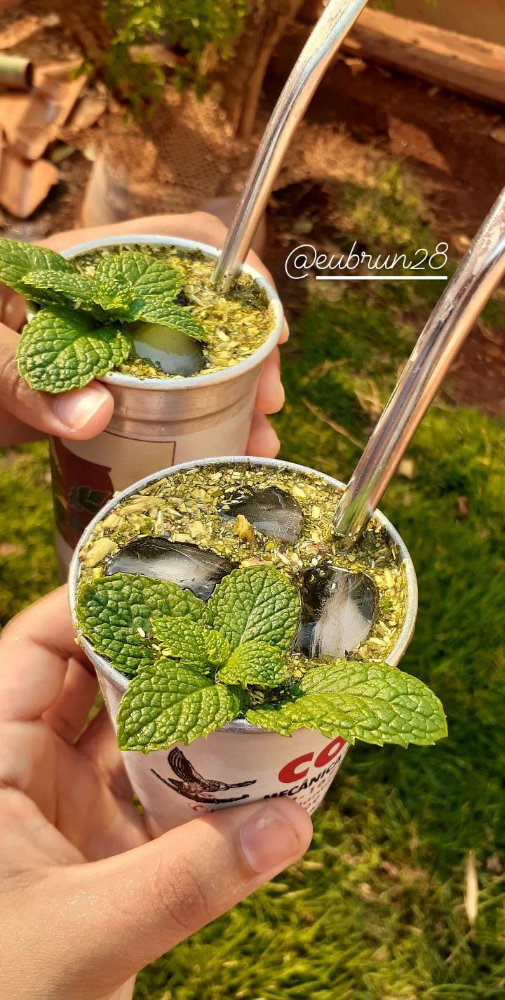
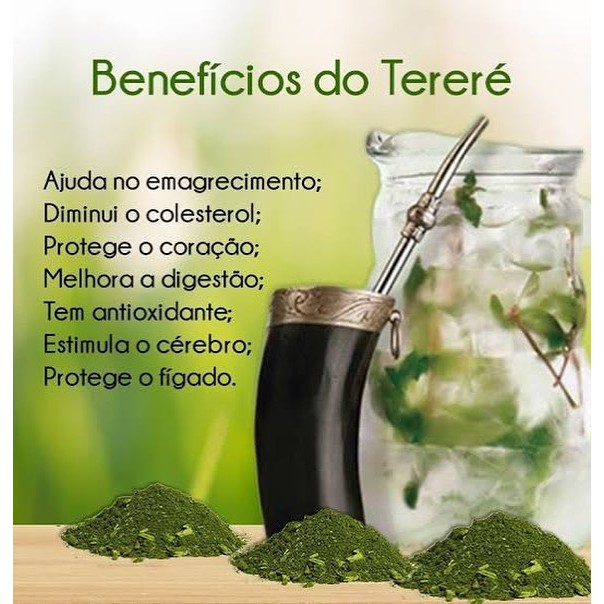

O tereré é uma bebida muito versátil, preparada com erva-mate e água gelada. Existem várias formas de prepará-lo, e cada uma traz um sabor único. Vamos explorar os principais tipos:

Tereré Clássico: A versão tradicional, feita com erva-mate e água gelada. Simples, mas deliciosa!
Tereré Frutado: Com adição de frutas como limão, abacaxi ou morango, o sabor fica ainda mais refrescante!

Tereré com Ervas: A adição de ervas como hortelã, boldo ou camomila traz mais sabor e propriedades medicinais.
Benefícios do Tereré
O tereré é mais do que apenas uma bebida refrescante. Além de ser delicioso, ele oferece diversos benefícios para a saúde:
Aumenta a energia: Contém cafeína, ajudando a melhorar o foco e a disposição.
Melhora a digestão: A erva-mate é conhecida por ajudar na digestão e no alívio de cólicas.
Refrescante e hidratante: A água gelada é perfeita para manter o corpo hidratado, especialmente nos dias quentes.
Auxilia no controle de peso: Pode ajudar a controlar o apetite e acelerar o metabolismo.

Como Preparar o Tereré
Preparar um tereré perfeito não é difícil, mas exige técnica. Veja o passo a passo para fazer a bebida ideal:
Escolha da erva-mate: Use erva-mate específica para tereré, mais fina e adequada para essa bebida.
Encha a cuia: Coloque erva-mate até 2/3 da cuia.
Incline a cuia: Incline a cuia em um ângulo de 45° para que a erva fique em uma posição inclinada.
Adicione água gelada: Coloque a bomba (canudo) e adicione água gelada, de preferência em temperatura entre 5°C e 10°C.
Compartilhe: Passar a cuia para os amigos é parte da tradição. Aproveite!
A História do Tereré
O tereré tem raízes profundas nas culturas indígenas da América do Sul. A bebida foi consumida pelos povos guaranis há séculos, sendo utilizada tanto para fins sociais quanto medicinais. Hoje, é um símbolo de amizade e convivência, especialmente nos países do Cone Sul, como Brasil, Paraguai e Argentina.